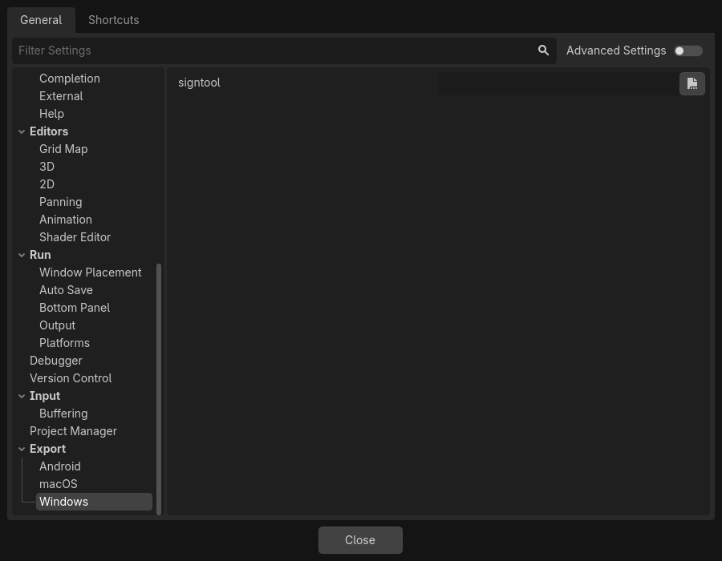
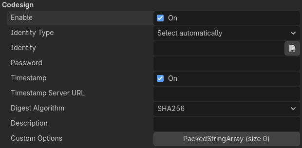

Xuất cho Windows
Xem thêm
Trang này mô tả cách xuất một dự án Godot sang Windows. Nếu bạn muốn biên dịch các binary của trình chỉnh sửa hoặc export template từ mã nguồn, hãy đọc Biên dịch cho Windows.
Cách đơn giản nhất để phân phối một game cho PC là sao chép file thực thi (godot.exe), nén thư mục lại và gửi cho người khác. Tuy nhiên, cách này thường không được mong muốn.
Godot cung cấp một cách phân phối cho PC gọn gàng hơn thông qua hệ thống xuất. Khi xuất cho Windows, trình xuất lấy toàn bộ file của dự án và tạo một file data.pck. File này được đóng gói cùng một binary được tối ưu đặc biệt, nhỏ hơn, nhanh hơn và không chứa trình chỉnh sửa lẫn trình gỡ lỗi.
Kiến trúc
Có 3 kiến trúc bộ xử lý khác nhau mà các dự án Godot đã xuất có thể chạy trên Windows:
x86_64
x86_32
arm64
Mặc định là x86_64, đây là kiến trúc phổ biến nhất của bộ xử lý PC hiện nay. Tại thời điểm viết bài, tất cả bộ xử lý Intel và AMD hiện đại đều là x86_64.
x86_32 sẽ cho bạn một file thực thi 32bit có thể chạy trên các phiên bản Windows chỉ hỗ trợ 32bit cũng như các phiên bản 64bit hiện đại. Không nên dùng tùy chọn này trừ khi bạn đang cố cho dự án chạy trên một phiên bản Windows 32bit cũ. Và cần lưu ý rằng không còn phiên bản Windows 32bit nào nhận được hỗ trợ từ Microsoft nữa.
Bộ xử lý arm64 hiện đại nhưng ít phổ biến hơn x86_64, và chạy Windows on ARM. Snapdragon X Elite là một ví dụ về bộ xử lý Windows ARM hiện đại. Dùng tùy chọn xuất này sẽ cho phép dự án chạy native trên bộ xử lý arm mà không cần trình giả lập Prism của Microsoft. File thực thi tạo bằng tùy chọn này sẽ không chạy được trên Windows thông thường dùng bộ xử lý x86_64. Nếu bạn tải dự án lên một nền tảng cho phép nhiều file thực thi, như itch.io, và tự tin rằng bộ xử lý Snapdragon X Elite đủ mạnh để chạy nó, chúng tôi khuyên bạn nên cung cấp một phiên bản ARM. Giả lập Prism còn xa mới hoàn hảo, và Godot không yêu cầu bạn build hay thiết kế game theo cách đặc biệt nào để chạy trên ARM.
Thay đổi icon của file thực thi
Godot sẽ tự động dùng ảnh được đặt làm icon dự án trong cài đặt dự án, và chuyển nó thành file ICO cho dự án đã xuất. Nếu bạn muốn tự tạo file ICO để kiểm soát tốt hơn cách icon hiển thị ở các độ phân giải khác nhau, hãy xem trang Thay đổi thủ công biểu tượng ứng dụng cho Windows.
Nhúng PCK
Nhúng PCK chỉ được hỗ trợ trên file thực thi có kích thước tối đa khoảng ~3,89 GB. Con số này bao gồm cả kích thước file thực thi và PCK được nhúng, nên trên thực tế file PCK chỉ có thể nặng tối đa khoảng ~3,75 GB. Con số này cũng có thể thay đổi tùy theo tùy chọn build khi dùng export template tùy chỉnh.
Ký code
Godot có khả năng tự động ký code khi xuất. Để làm vậy, bạn phải cài Windows SDK (trên Windows) hoặc osslsigncode (trên mọi hệ điều hành khác). Bạn cũng sẽ cần một chứng chỉ ký package, thông tin về cách tạo chứng chỉ có thể tìm thấy tại đây.
Thiết lập
Cần thay đổi cài đặt ở hai nơi. Đầu tiên, trong cài đặt trình chỉnh sửa, dưới mục Export > Windows. Nhấp vào biểu tượng thư mục bên cạnh cài đặt Sign Tool; nếu bạn dùng Windows, hãy tìm và chọn SignTool.exe, nếu dùng hệ điều hành khác, hãy chọn osslsigncode.

Nơi thứ hai là export preset cho Windows, có thể tìm thấy trong Project > Export.... Thêm một preset windows desktop nếu bạn chưa có. Trong phần tùy chọn có một mục code signing.

Enabled phải được đặt thành true, và Identity phải được đặt là chứng chỉ ký. Các cài đặt khác có thể điều chỉnh khi cần. Sau khi hoàn tất, Godot sẽ ký dự án của bạn khi xuất.
Biến môi trường
Bạn có thể dùng các biến môi trường sau để đặt tùy chọn xuất bên ngoài trình chỉnh sửa. Trong quá trình xuất, chúng sẽ ghi đè các giá trị bạn đã đặt trong menu xuất.
Tùy chọn xuất |
Biến môi trường |
|---|---|
Encryption / Encryption Key |
|
Options / Codesign / Identity Type |
|
Options / Codesign / Identity |
|
Options / Codesign / Password |
|
Tùy chọn xuất
Bạn có thể tìm danh sách đầy đủ các tùy chọn xuất trong tài liệu tham khảo lớp class_EditorExportPlatformWindows.